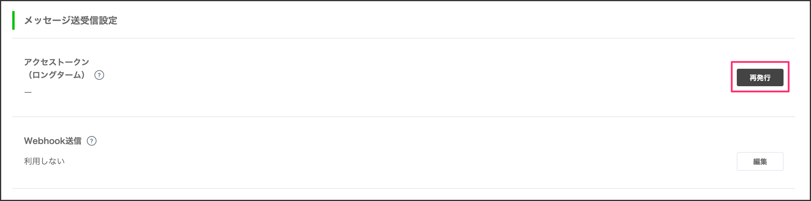
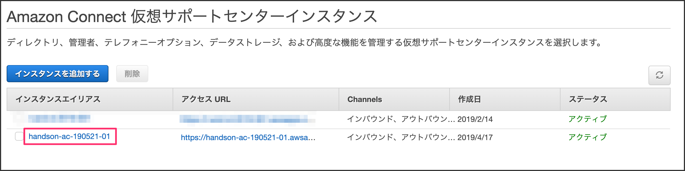
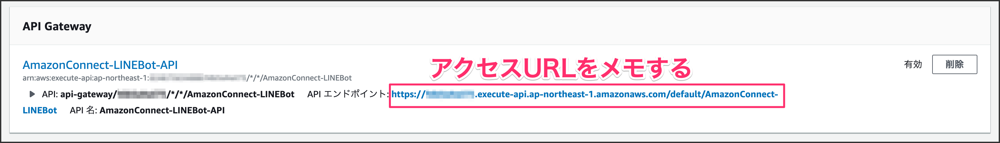

Amazon Connect電話番号取得
すでにAmazon Connectの電話番号を取得している前提で開始します。
まだ未取得な方はこちらから番号を取得しておいてください。
ここで手に入れた電話番号は後ほど使うのでメモしておきましょう。
https://ac-handson-00.netlify.com
1-1. Lambda関数を作成する
サービス部分をクリックしてメニューを展開します。そこの検索窓に「Lambda」と入力します。
［関数の作成］ボタンをクリックします。
各項目を埋めて、［関数の作成］ボタンをクリックします。
①関数名 | AmazonConnect-BMI |
②実行ロール | AWSポリシーテンプレートから新しいロールを作成 |
③ロール名 | AmazonConnect-Role |
④ポリシーテンプレート | 基本的な Lambda@Edge のアクセス権限 |
index.jsを全て下記に書き換えます。書き換えたら右上の［保存］ボタンをクリックします。
exports.handler = async (event) => {
// 身長と体重を取得する
const heightVal = event.Details.ContactData.Attributes.HeightVal;
const weightVal = event.Details.ContactData.Attributes.WeightVal;
// BMI計算
const bmiVal = (parseFloat(weightVal) / (parseFloat(heightVal)/100 * parseFloat(heightVal)/100)).toFixed(1);
// 標準体重
const stdWeight = (22 * (parseFloat(heightVal)/100 * parseFloat(heightVal)/100)).toFixed(1);
var speechText = `あなたのBMIは${bmiVal}です。標準体重は${stdWeight}kgです。`;
return {"BMI": speechText};
};
2-1. LambdaをAmazon Connectに適用する
サービスを展開して、検索窓に「Amazon Connect」と入力してクリックします。
左側メニューから「問い合わせフロー」をクリックします。
AWS Lambdaの項目までスクロールして、関数のプルダウンメニューから「AmazonConnect-BMI」の関数を選択します。
選択したら、［追加］ボタンをクリックします。
左側メニューから「概要」をクリックします。［管理者としてログイン］をクリックします。
2-2.問い合わせフローの作成
左側メニューのルーティングから「問い合わせフロー」をクリックします。
［問い合わせフローの作成］をクリックします。
名前を「BMIフロー」と入力します。
設定カテゴリにある「音声の設定」ブロックをドラッグアンドドロップして、ドロップしたブロックをクリックします。
言語は「日本語」でお好きな音声を選択してください。
エントリポイントと音声の設定ブロックを繋げます。
操作カテゴリの「顧客の入力を保存する」をドラッグアンドドロップしてクリックします。
「テキストの読み上げ」を選択し、発話する内容を入力します。身長の桁数は3桁なので、最大桁数は3桁に設定します。
ブロックを繋げます。
設定カテゴリにある「問い合わせ属性の設定」をドラッグアンドドロップします。
「属性を使用する」を選択し、項目を埋めていきます。
宛先キーは大文字小文字に気をつけてください。
宛先キー | HeightVal ※大文字小文字は一致させてください |
タイプ | システム |
属性 | 保存済みのお客様の入力 |
ブロックを繋げます。
操作カテゴリの「顧客の入力を保存する」をドラッグアンドドロップします。
「テキストの読み上げ機能」を選択し、発話する内容を入力します。体重の最大桁数は3桁にします。
ブロックを繋げます。
設定カテゴリにある「問い合わせ属性の設定」をドラッグアンドドロップします。
「属性を使用する」を選択し、項目を埋めていきます。
宛先キーは大文字小文字に気をつけてください。
宛先キー | WeightVal ※大文字小文字は一致させてください |
タイプ | システム |
属性 | 保存済みのお客様の入力 |
ブロックを繋げます。
統合カテゴリにある「AWS Lambda 関数を呼び出す」をドラッグアンドドロップします。
関数は先程作成した「AmazonConnect-BMI」を選択します。
ブロックを繋げます。
操作カテゴリの「プロンプトの再生」をドラッグアンドドロップします。
「テキストの読み上げ機能」を選択し、下記コードを入力します。
Lambdaから帰ってくるbodyは「$.External」に格納されます。
$.External.BMI
ブロックを繋げます。
終了カテゴリーの「切断/ハングアップ」をドラッグアンドドロップします。

未接続のノードを全て「切断/ハングアップ」ブロックに繋げます。

右上の［保存］と [公開] ボタンをクリックします。

左側メニューのルーティングから［電話番号］をクリックします。
電話番号をクリックします。
問い合わせフローを作成した「BMIフロー」を選択します。
これで電話番号かけて、身長と体重の値を入力すればBMI値が返ってきます。
3-1. プロバイダーを作成する
LINE Developersのページにアクセスしてください。
https://developers.line.biz/ja/
［ログイン］ボタンをクリックします。
［LINEアカウントでログイン］をクリックします。
新規プロバイダーを作成します。既にプロバイダーがある方は既存のものでも問題ありません。
プロバイダー名を入力します。これは何でも構いません、お好きなお名前を決めてください。
［作成する］ボタンをクリックします。

3-2. 新規チャネルを作成する
［新規チャネル作成］をクリックします。
［Messaging API］をクリックします。
アプリのアイコンを設定します。アイコンは下記のものを利用してください。
https://raw.githubusercontent.com/gaomar/tokyo-gaomar-02/master/icon/icon.png
各項目を埋めていき、［入力内容を確認する］をクリックします。
アプリ名 | Amazon Connectハンズオン |
アプリ説明 | Amazon Connectハンズオン |
大業種 | 個人 |
小業種 | 個人（IT・コンピュータ） |
メールアドレス | あなたのメールアドレス |
［同意する］ボタンをクリックします。
2つのチェックを入れてから、［作成］ボタンをクリックします。
作成したAmazon Connectハンズオンをクリックします。
メッセージ送受信部分にあるアクセストークンの項目の［再発行］ボタンをクリックします。

そのまま［再発行］ボタンをクリックします。
発行されたアクセストークンは後ほど使用しますので、メモしておいてください。
Bot情報部分にあるアプリのQRコードを読み取ってLINE Botと友だちになっておいてください。
その下にある、Your user IDも後ほど使用しますので、PCにメモしておいてください。
4-1. Lambda Layerを追加する
AWSのLambdaページを開いてください。左側メニューのLayersをクリックして、
［レイヤーの作成］ボタンをクリックします。
各項目を埋めていきます。linebot.zipは下記からダウンロードしてください。
https://github.com/gaomar/tokyo-gaomar-02/raw/master/files/linebot.zip
［作成］ボタンをクリックします。
①名前 | LINEBot-SDK |
②説明 | LINEBot-SDK |
③アップロード | ダウンロードしたlinebot.zip |
④ランタイム | Node.js 10.x |
4-2. LambdaにLINE Botを適用する
左側メニューの［関数］をクリックします。既に作成しているAmazonConnect-BMIをクリックします。
Layersをクリックして、［レイヤーの追加］をクリックします。
先程作成したレイヤーからLINEBot-SDKを選択し、バージョン1を選択して、［追加］ボタンをクリックします。
追加したらAmazonConnect-BMIをクリックします。
下にスクロールして環境変数にACCESS_TOKENとUSER_IDを追記します。
メモしておいたものをそれぞれ貼り付けます。
index.jsの中身を編集して、右上の［保存］ボタンをクリックします。
// LINE Botライブラリ
const line = require('@line/bot-sdk');
const client = new line.Client({
// Lambdaの環境変数よりMessagingAPIのチャネルアクセストークンを取得
channelAccessToken: process.env.ACCESS_TOKEN
});
exports.handler = async (event) => {
// 発信者番号
const phoneNumber = event.Details.ContactData.CustomerEndpoint.Address;
// LINE Botに着信履歴掲載
await client.pushMessage(process.env.USER_ID, { type: 'text', text: `${phoneNumber}から着信` });
// 身長と体重を取得する
const heightVal = event.Details.ContactData.Attributes.HeightVal;
const weightVal = event.Details.ContactData.Attributes.WeightVal;
// BMI計算
const bmiVal = (parseFloat(weightVal) / (parseFloat(heightVal)/100 * parseFloat(heightVal)/100)).toFixed(1);
// 標準体重
const stdWeight = (22 * (parseFloat(heightVal)/100 * parseFloat(heightVal)/100)).toFixed(1);
// LINE Botにも結果を掲載
await client.pushMessage(process.env.USER_ID, { type: 'text', text: `BMIは${bmiVal}\n標準体重は${stdWeight}kg` });
var speechText = `あなたのBMIは${bmiVal}です。標準体重は${stdWeight}kgです。`;
return {"BMI": speechText};
};
Amazon Connectの電話にかけると、LINE Botに通知が飛んできます。
5-1. Bot用問い合わせフローを作成する
Amazon Connectから作成したインスタンスエイリアスをクリックします。

［管理者としてログイン］ボタンをクリックします。
左側メニューにあるルーティングの［問い合わせフロー］をクリックします。
［問い合わせフローの作成］ボタンをクリックします。
フローの名前を「LINEBotフロー」を入力します。
音声の設定をドラッグアンドドロップして、ブロックをクリックします。
音声の種類を決めて［Save］をクリックして、線を結びます。

プロンプトの再生をドラッグアンドドロップして、ブロックをクリックします。

テキストの読み上げを選択して、発話内容を記述します。解釈はSSMLを選択して、右下の［Save］ボタンをクリックします。
発話内容はこちらをコピペしてください。
<speak>
<break time='2s' />
ラインから電話依頼をされたのでかけました。それではさようなら。
</speak>
線で結びます。
終了/ 転送カテゴリーから切断/ハングアップをドラッグアンドドロップします。
線で結びます。
［保存］と [公開] ボタンをクリックします。
5-2. IDをメモしておく
問い合わせフローの名前の下に「追加のフロー情報の表示」という項目があるので、それを展開します。展開するとARNの情報が表示されるのでinstanceのIDとconstact-flowのIDをそれぞれメモしておきます。
6-1. Lambda関数を作成する
Lambdaから新規で関数を作成します。［関数の作成］ボタンをクリックします。
関数は以下の通り入力して、［関数の作成］ボタンをクリックします。
①関数名 | AmazonConnect-LINEBot |
②実行ロール | 既存のロールを使用する |
③既存ロール | server-role/AmazonConnect-Role |

関数が作成されたら、［Layers］をクリックし、下に表示される［レイヤーの追加］ボタンをクリックします。
LINEBot-SDKとバージョンを指定して、［追加］ボタンをクリックします。
AmazonConnect-LINEBot部分をクリックします。
下にスクロールすると実行ロールという項目があるので、［AmazonConnect-Roleロールを表示］リンクをクリックします。
［インラインポリシーの追加］をクリックします。
サービスを展開して、検索窓に「Connect」と入れて検索します。出てきた［Connect］をクリックします。
アクションのアクセスレベルにある「書き込み」部分を展開して、その中にあるStartOutboundVoiceContactのチェックを入れます。
すべてのリソースを選択して、右下の［ポリシーの確認］ボタンをクリックします。
ポリシー名を入力します。AmazonConnectPolicyとしました。右下の［ポリシーの作成］ボタンをクリックします。
Lambda画面に戻り、画面更新するとAmazon Connectの権限が追加されます。
6-2. API Gatewayを設定する
LINE BotがLambdaを実行するためのアクセスURLを発行します。
［トリガーを追加］ボタンをクリックします。
プルダウンメニューからAPI Gatewayを選択します。
トリガーの設定項目があるのでAPIは「新規APIの作成」を選択し、セキュリティは「オープン」にします。
設定できたら、右下の［追加］をクリックします。
アクセスURLは後で使うので、メモしておきます。

6-3. Lambda関数を編集する
AmazonConnect-LINEBot部分をクリックして、下に表示されるindex.jsファイルを下記コードに編集します。
const line = require('@line/bot-sdk');
const client = new line.Client({channelAccessToken: process.env.ACCESSTOKEN});
const AWS = require('aws-sdk');
var connect = new AWS.Connect();
exports.handler = async (event, context) => {
const body = JSON.parse(event.body);
var phoneNo = body.events[0].message.text;
phoneNo = phoneNo.toLowerCase();
// 全角→半角
phoneNo = phoneNo.replace(/[Ａ-Ｚａ-ｚ０-９]/g, function(s) {
return String.fromCharCode(s.charCodeAt(0) - 65248);
});
// スペース削除
phoneNo = phoneNo.replace(/\s+/g, '');
// ハイフンを小文字化
phoneNo = phoneNo.split('－').join('-');
// ハイフンを削除
phoneNo = phoneNo.split('-').join('');
// ドット削除
phoneNo = phoneNo.split('.').join('');
// 括弧削除
phoneNo = phoneNo.split('(').join('');
phoneNo = phoneNo.split(')').join('');
phoneNo = phoneNo.split('（').join('');
phoneNo = phoneNo.split('）').join('');
// 先頭が0なら+81にする
phoneNo = phoneNo.replace(/^0/, '+81');
// 先頭が数字なら+をつける
phoneNo = phoneNo.replace(/^[1-9]/, '+');
const message = {
'type': 'text',
'text': `${body.events[0].message.text}に電話をするよ`
};
var params = {
ContactFlowId: process.env.CONTACTFLOWID,
DestinationPhoneNumber: phoneNo,
InstanceId: process.env.INSTANCEID,
SourcePhoneNumber: process.env.SOURCEPHONENUMBER
};
var calling = connect.startOutboundVoiceContact(params, function(err, data) {
if (err) {
console.log(err);
} else {
console.log(data);
}
});
var response = await client.replyMessage(body.events[0].replyToken, message);
const lambdaResponse = {
statusCode: 200,
headers: { "X-Line-Status" : "OK"},
body: '{"result":"completed"}'
};
context.succeed(lambdaResponse);
};
6-4. 環境変数を設定する
LINE BotのアクセストークンとAmazon Connectの問い合わせフローのIDをそれぞれ設定します。
ACCESSTOKEN | 3-2で作成したLINE Botのアクセストークン |
CONTACTFLOWID | 5-2でメモしたcontact-flowのID |
INSTANCEID | 5-2でメモしたinstanceのID |
SOURCEPHONENUMBER | Amazon Connectで取得した電話番号 ※+81を先頭につけて数字のみにします |
7-1. LINE BotのWebhookを設定する
LINE BotとLambdaを連携するためにLINE BotのWebhook URLを指定します。
［編集］ボタンをクリックします。
API Gatewayで発行したアクセスURLを貼り付けます。［更新］ボタンをクリックします。
※貼り付ける際、先頭の「https://」部分は貼り付けないよう気をつけてください。
Webhook送信部分にある編集をクリックします。「利用する」を選択して［更新］ボタンをクリックします。
7-2. LINE Botの設定を変更する
自動応答メッセージは利用したくないので、［設定はこちら］のリンクをクリックします。
あいさつメッセージと応答メッセージをそれぞれオフにします。
これでLINE Botに電話をかけたい番号を入力するとAmazon Connectから電話がかかってきます。くれぐれも電話番号の入力ミスには気をつけてください。